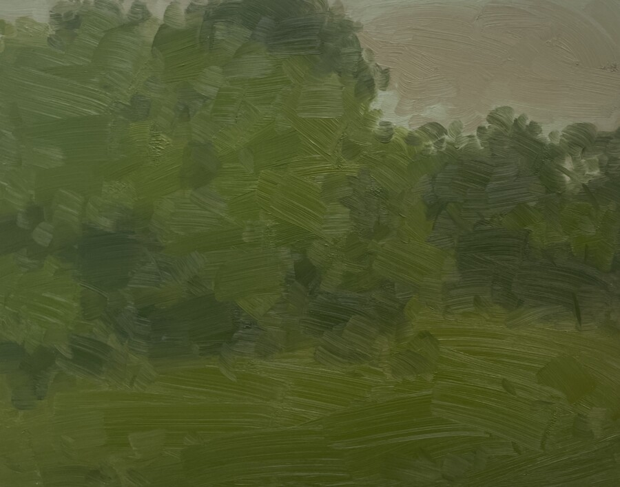

Will Gabaldón
Chicago-based painter, Will Gabaldón, debuts new larger scale wet-on-wet compositions for his second solo exhibition at Ackerman Clarke.

Chicago-based painter, Will Gabaldón, debuts new larger scale wet-on-wet compositions for his second solo exhibition at Ackerman Clarke.